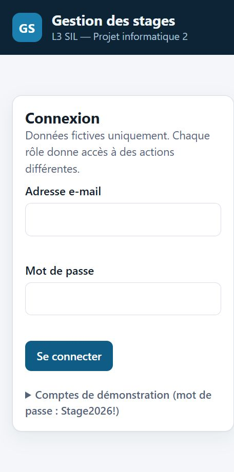
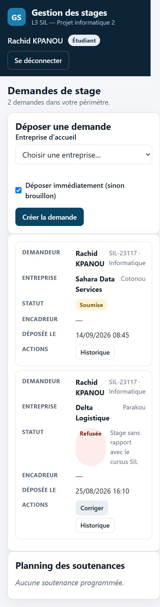
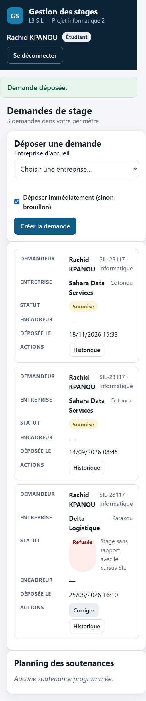
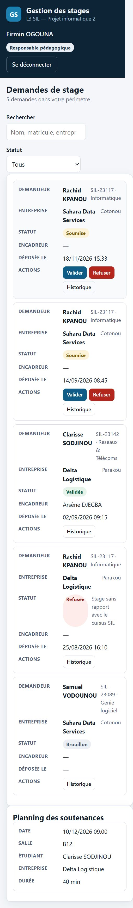
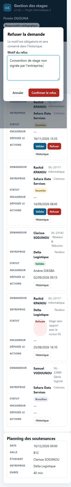
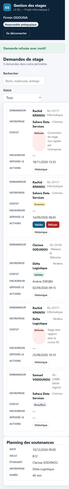
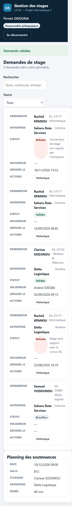
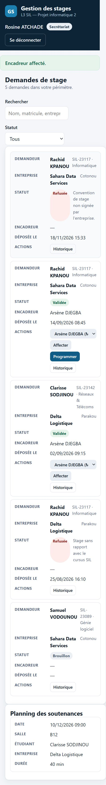

http://127.0.0.1:8000 · jeu d'essai tp3/002_seed.sql · 18 / 11 / 2026L'interface est une page unique (public/index.html, rendue par
public/app.js) qui consomme l'API en fetch et affiche les
écrans selon le rôle renvoyé par GET /api/session. Aucun HTML
n'est généré côté serveur : c'est bien une séparation
front / back, ce qui rend l'API réutilisable par un futur client mobile.
| Écran | Contenu |
|---|---|
| Connexion | E-mail, mot de passe, erreurs sous chaque champ. |
| Mes demandes | Tableau filtré côté serveur sur etudiant_id ; boutons Soumettre, Corriger, Historique. |
| Dépôt | Choix de l'entreprise, case « Déposer immédiatement ». |
| Historique | Fenêtre modale : chaque transition, son auteur, son motif, son horodatage. |
| Écran | Contenu |
|---|---|
| Connexion | Identique, redirection selon le rôle. |
| Demandes à traiter | Recherche par nom, matricule ou entreprise ; filtre par statut ; compteur du périmètre. |
| Décision | Valider, Refuser (motif obligatoire), Affecter un encadreur, Programmer une soutenance. |
| Planning | Tableau des soutenances triées par date. |
L'administrateur partage l'écran du responsable avec un périmètre total et l'accès aux comptes ; l'encadreur ne voit que les dossiers qui lui sont affectés.








preuves/planning.txt.Les fichiers complets (pleine hauteur) sont dans tp7/preuves/ ;
les cadres ci-dessus n'en montrent que le haut. Scénario détaillé
et commandes de vérification : tp7/scenario.md.
| # | Action | Résultat observé | Preuve |
|---|---|---|---|
| 1 | Ouvrir / sans session | Écran de connexion, aucun bandeau d'erreur | capture 01 |
| 2 | Connexion rachid.kpanou@campus.test | 2 demandes (1 soumise, 1 refusée), formulaire de dépôt visible | capture 02 |
| 3 | Choisir « Sahara Data Services » | Sélection prise en compte | capture 03 |
| 4 | Créer la demande (dépôt immédiat) | Bandeau « Demande déposée. », 3 démandes, ligne Soumise | capture 04 |
| 5 | Recharger (F5) | Mêmes 3 demandes, mêmes statuts : persistance en base | capture 04 + SELECT |
| 6 | Connexion responsable | 5 demandes, boutons de décision sur les soumises | capture 05 |
| 7 | Cliquer Refuser et saisir un motif | Dialogue accessible, focus dans le champ motif | capture 06 |
| 8 | Confirmer le refus | Statut Refusée, motif affiché sous le badge | capture 07 |
| 9 | Valider une autre demande | Statut Validée, bandeau de confirmation | capture 08 |
| 10 | Secrétariat : affecter A. DJEGBA | Encadreur affiché dans la ligne | capture 09 |
| 11 | Programmer 11/12/2026 10:00, C3, 40 min | Bandeau « Soutenance programmée. », ligne au planning | planning.txt |
| 12 | Recharger après programmation | Planning et statuts conservés | planning.txt |
| Code | Déclencheur | Comportement de l'interface |
|---|---|---|
| 400 | Champ manquant, statut inconnu, date invalide | Message renvoyé dans details placé sous le champ concerné ; aucun rechargement. |
| 401 | Session absente ou expirée | Retour à l'écran de connexion, jeton CSRF rafraîchi. |
| 403 | Action interdite au rôle, jeton CSRF absent | Bandeau rouge « Accès interdit à ce dossier. » ; boutons masqués en amont. |
| 404 | Demande inexistante | « Dossier introuvable. » et retour à la liste. |
| 409 | Transition interdite, créneau occupé, doublon | Bandeau explicite reprenant le message du serveur ; la ligne garde son statut. |
| 500 | Erreur interne | Bandeau neutre « Erreur interne du serveur. » ; détail dans logs/app.log. |
Les boutons ne sont pas seulement masqués : chaque appel est revalidé côté serveur (rôle, propriété du dossier, transition). Masquer un bouton est un confort, jamais une mesure de sécurité.
Le test consiste à remplacer en base la raison sociale d'une entreprise par
<b>Delta</b> Logistique <script>alert(1)</script>,
puis à recharger la liste. Mesures relevées dans le DOM :
balises <b> créées dans le tableau : 0 balises <script> créées : 0 texte affiché littéralement : oui boîte d'alerte déclenchée : aucune scripts de la page : 1 (app.js)
Sortie complète : tp7/preuves/xss.txt.
Le code construit les lignes avec createElement et affecte les
valeurs par textContent. Aucune concaténation de chaîne dans
innerHTML : c'est la seule règle qui garantit l'absence de XSS
stockée, y compris quand la donnée vient de la base. La valeur a ensuite
été restaurée (Sahara Data Services).
| Point | Mise en œuvre |
|---|---|
| Structure | header, main, section, table avec caption et th scope ; hiérarchie de titres continue. |
| Formulaires | Chaque champ a un label for ; erreurs reliées par aria-describedby ; aria-invalid posé sur le champ fautif. |
| Dialogues | <dialog> natif : focus piégé, fermeture par Échap, retour du focus sur le bouton d'origine. |
| Messages | Bandeau role="status" (succès) ou role="alert" (erreur), annoncé par le lecteur d'écran. |
| Contrastes | Texte #1a1a1a sur fond clair, badges de statut doublés d'un libellé (jamais la couleur seule). |
| Clavier | Tous les boutons sont des <button> natifs ; aucune action réservée à la souris. |